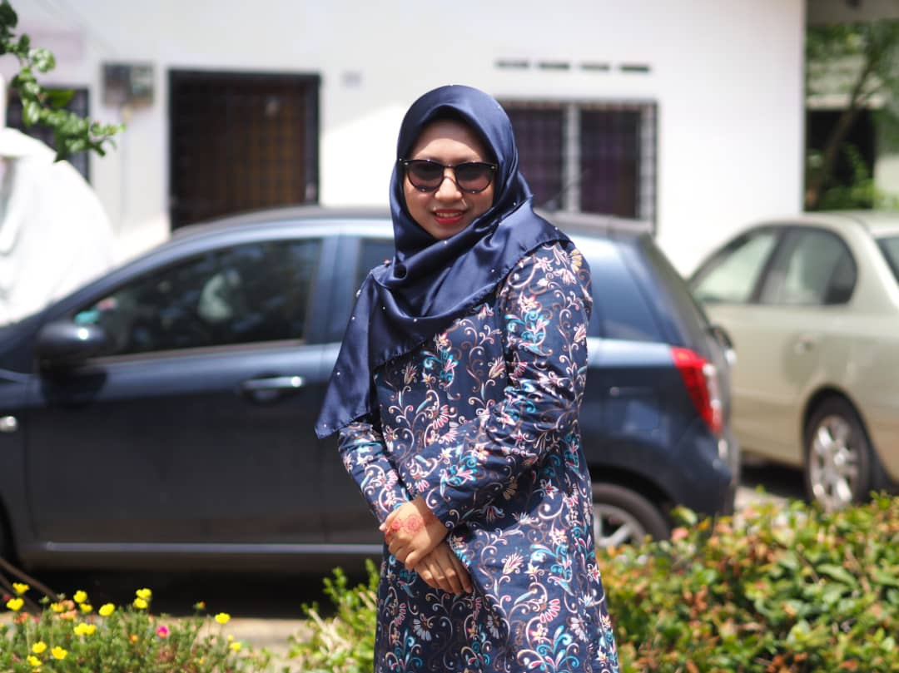

MY HOME PAGE MY BIODATA MY EXPERIENCE MY EDUCATION MY FAMILY MY GALLERY MY AMBITION
|  | ||
| EXPERIENCE (1) | My first experience was I worked with part politics after SPM was exhausted in 2017. In my time of work, I am able to add knowledge about politics. This is because to be a politician is my ambition from my little one again. Next, after I work I got a resume offer to study at UITM Merbok and from the offer, I have stopped for a while to work with politics. Insha-Allah after I learn I will work back and I will also work in the Prime Minister's Office of Malaysia In Kuala Lumpur. | |
|---|---|---|
| EXPERIENCE (2) | My second experience is that I am very proud to meet Tun Dr Mahathir bin Mohammad in Penang in 2019. In that time, he came to Penang to attend the national day and Kibar Jalur Gemilang Program. At that time, I was very proud that I had long wanted to meet him and at that time he became the 2nd Prime Minister of Malaysia. Finally, I can also picture with her and I have also been her adopted child at that time. | |